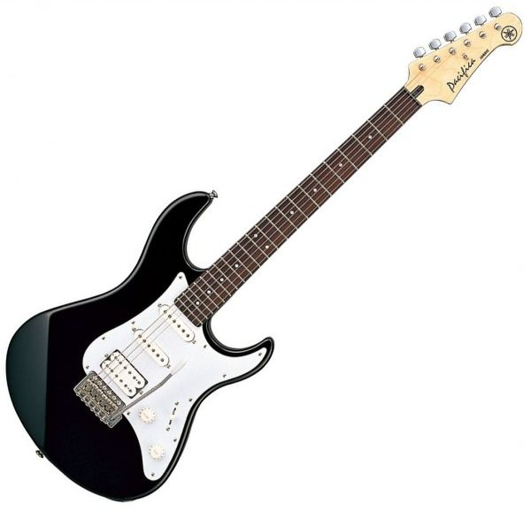
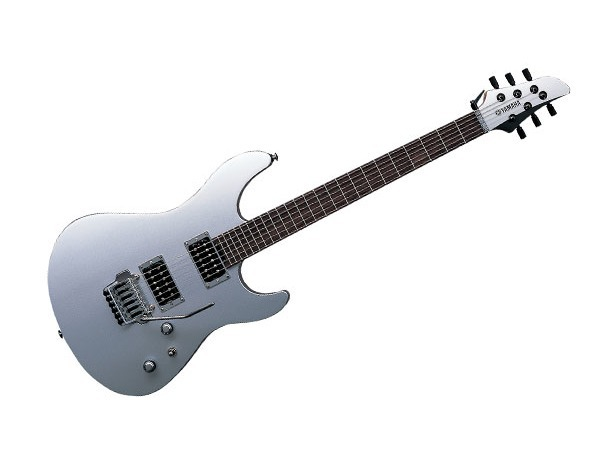
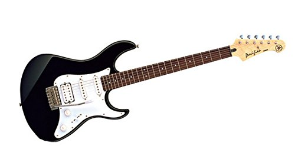

|
If there's a story behind every instrument builder, then Yamaha's would read like a novel. They've had a long journey going
from their 1887 beginnings as an organ maker to what they are today: the largest musical instrument manufacturer in the world. These days,
Yamaha makes virtually every kind of instrument you can imagine, which includes a wide selection of acoustic guitars. Known for their playability
and accessibility to musicians of all skill levels, Yamaha acoustic guitars are great choices whether you're a brand-new beginner or a seasoned
professional guitarist. Just like any instrument, the process of choosing the right Yamaha guitar begins with knowing what you're looking for.
That helps narrow down the options right from the start, so you can hone in on the models that fit you best. For example, if you're an aspiring
folk musician, the FG700S Folk Acoustic Guitar is a great suggestion to get you started. Or, for the pro performer, check out some of Yamaha's
stage and studio-oriented guitars like the A-Series All Solid Wood Concert Acoustic-Electric Guitar with SRT, or the LS16R L Series Solid
Rosewood/Spruce Concert Acoustic-Electric Guitar. Want something that completely breaks the mold of a traditional acoustic guitar? In that
case, take a look at the Yamaha SLG110S Steel String Silent Guitar. Designed to let you practice anytime and anywhere, this instrument
delivers lifelike acoustic sound through your favorite pair of headphones. While its looks are totally unique, it still provides a familiar
feel through its careful design and the use of traditional woods including a maple body, mahogany neck and rosewood fingerboard. The
SLG110S even disassembles for transport, making it the best practice companion a guitarist could ask for. All of the guitars in Yamaha's
lineup, from the classic dreadnoughts to their high-tech silent model, are designed to perform and built to last. That's the formula
that allowed Yamaha to grow into the powerhouse they are: build it well, and make it accessible to every musician. Yamaha acoustic guitars
certainly follow that tradition, and no matter your musical style, there's an instrument waiting for you in this section.
|


